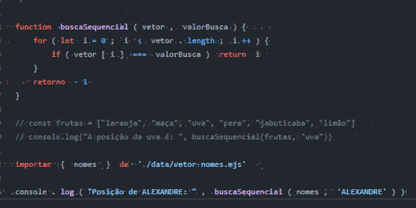
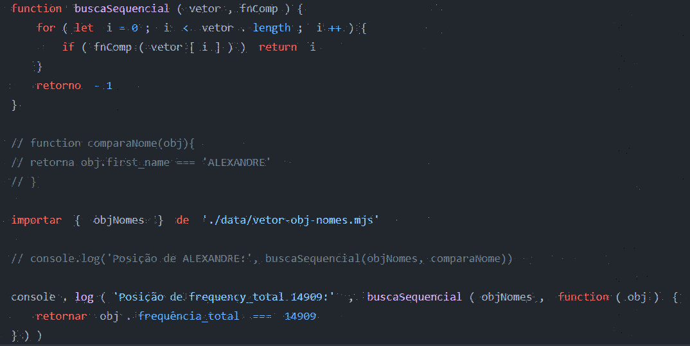
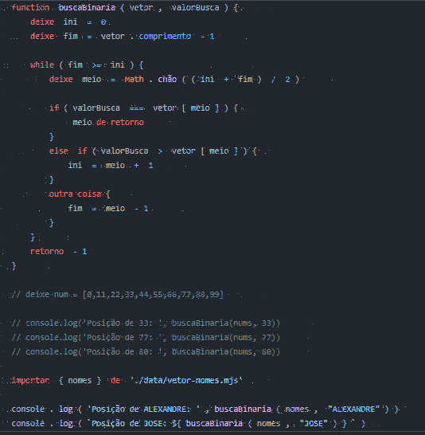
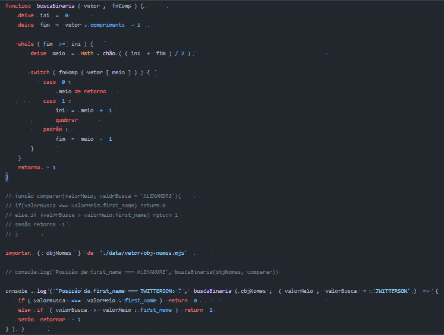
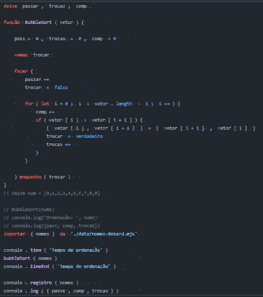
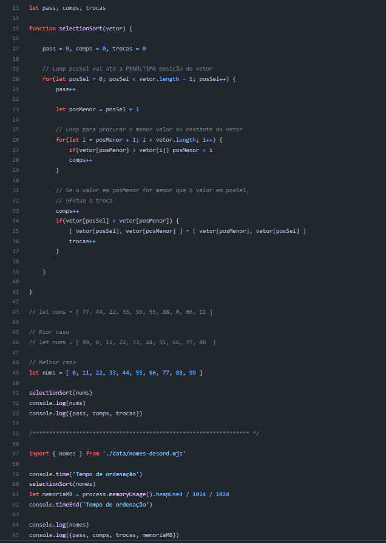
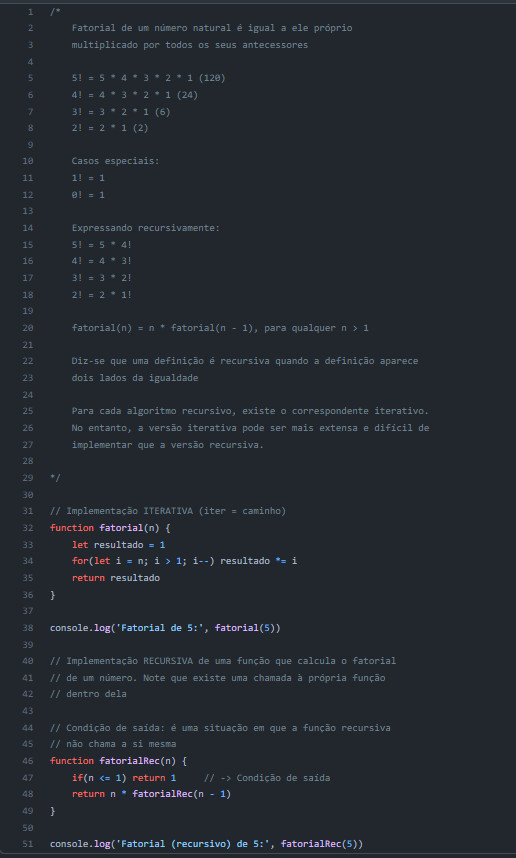
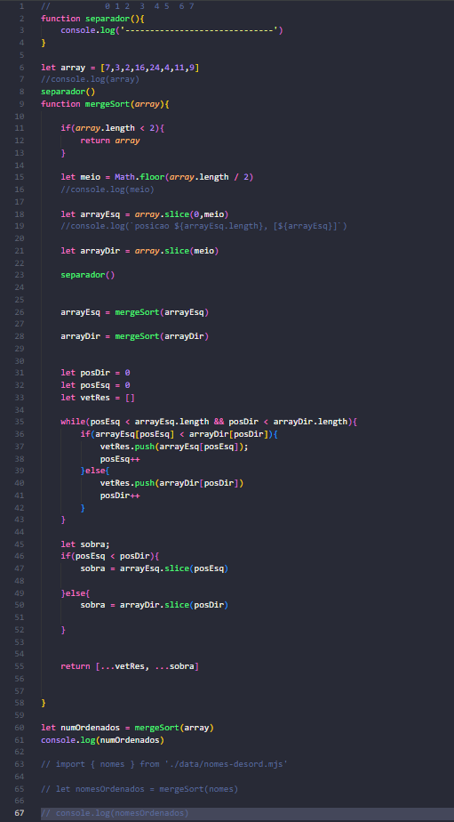

Professor: Alexandre Gomes.
ALGORITMO DE BUSCA SEQUENCIAL
Percorre o vetor, verificando se cada um dos elementos corresponde ao valor de busca. Ao encontrar uma correspondência, retorna a posição onde o valor de busca está no vetor.
Caso o valor de busca não exista no vetor, retorna o valor convencional -1.
Algoritimo de busca sequencial em um vetor de objetos.
Quando um algoritimo de busca precisa atuar sobre um vetor de objetos, a comparacão não deve ser feita dentro da função que implementa o algoritmo. Em vez disso, recembemos uma outra função (externa) como parametro que resolverá a comparação.
Essa função externa será chamada passando o objeto atual do vetor e esperará um retorno true caso a função externa determine que o objeto atual contém o valor de busca, ou false, caso contrário.
Requer um conjunto de dados ORDENADOS.
Atua dividindo o vetor sucessivamente em metades aproximadas, até que o valor de busca seja localizado, ou que o ponteiro de fim acabe antes do ponteiro de início.
Essa ultima situação indica que o vlaor de busca não existe no conjunto.
Algoritmo de busca binária em vetor de objetos.
Para usar a busca binária em um VETOR DE OBJETOS, precisamos transferi a comparação para uma função externa que retorne um dos três valores:
O bubble sort, ou ordenação por flutuação é um algoritimo de ordençaõ dos mais simples. A idéia é percorreto o vetor diversas vezes, e a cada passagem fazer flutuar para o topo o maior elemento da sequência.
Trata-se de uma otimização do bubble sort, diminuindo drasticamente o número de trocas necessárias para fazer a ordenação.
Isola um dos valores do vetor e procura pelo menor valor entre os restantes, promovendo a troca caso o primeiro valor seja maior que o segundo.
Diz-se que uma definição é recursiva quando a definição aparece dois lados da igualdade Para cada algoritmo recursivo, existe o correspondente iterativo.
No entanto, a versão iterativa pode ser mais extensa e difícil de implementar que a versão recursiva
No processo de ordenação, esse algoritmo "desmonta" o vetor original contendo N elementos até obter N vetores de apenas um elemento cada um. Em seguida, usando a técnica de mesclagem (merge), "remonta" o vetor, dessa vez com os elementos já em ordem.
